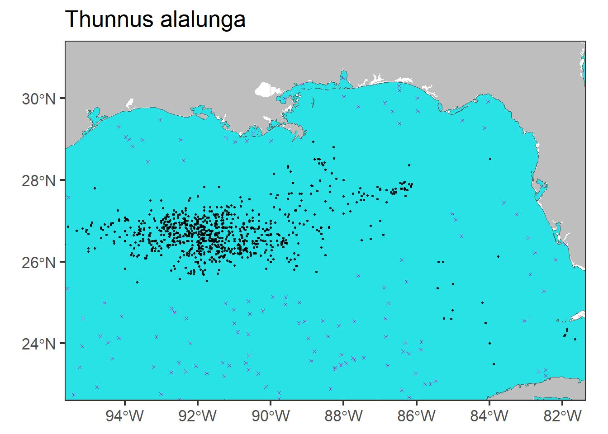

Chapter 2 Presence-absence data
In this chapter we first, download occurrence data from global open-access datasets such as Global Biodiversity Information Facility (GBIF, https://www.gbif.org/) and Ocean Biodiversity Information System (OBIS, https://obis.org/); second, clean downloaded data reformating, renaming fields and removing outliers data; and lastly, we generate a set of pseudoabsence points along our study area.
First we load list required libraries.
requiredPackages <- c(
#GENERAL USE LIBRARIES --------#
"here", # Library for reproducible workflow
"rstudioapi", # Library for reproducible workflow
"maptools", #plotting world map
"ggplot2", #for plotting
#Presence-absence data chapter--------#
"robis", # Specific library to get the occurrence data
"rgbif",# Specific library to get the occurrence data
"CoordinateCleaner", #to remove outlier
"rgdal", # to work with Spatial data
"sf", # to work with spatial data (shapefiles)
"data.table", #for reading data,
"dplyr", #for reading data,
"tidyr" #for reading data
)Function to install the required packages that are not in your system and load all the required packages
install_load_function <- function(pkg){
new.pkg <- pkg[!(pkg %in% installed.packages()[, "Package"])]
if (length(new.pkg))
install.packages(new.pkg, dependencies = TRUE)
sapply(pkg, require, character.only = TRUE)
}
install_load_function(requiredPackages)Define some settings
# location of script
setwd(dirname(getSourceEditorContext()$path))
# general settings for ggplot (black-white background, larger base_size)
theme_set(theme_bw(base_size = 16))2.1 Download presence data
First we need to define our study area, in this case we select the Atlantic ocean based on the The Food and Agriculture Organization (FAO) Major Fishing Areas for Statistical Purposes and we remove Black sea subarea.
# url where FAO shapfile is stored
url<-"https://www.fao.org/fishery/geoserver/area/ows?service=WFS&version=1.0.0&request=GetFeature&typeName=area%3AFAO_AREAS&maxFeatures=50&outputFormat=SHAPE-ZIP"
#download file
download.file(url,"data/spatial/FAO_AREAS.zip",mode="wb")
#unzip downloaded file
unzip("data/spatial/FAO_AREAS.zip",exdir="data/spatial")
# Load FAO (spatial multipolygon)
FAO<- st_read(file.path("data", "spatial", "FAO_AREAS.shp"))
#Select Atlantic Ocean FAO Area
FAO_Atl <- FAO[FAO$OCEAN=="Atlantic",]
#Select Black sea subarea
Black_Sea <- FAO_Atl[FAO_Atl$ID=="20",]
# transform to sf objects
FAO_Atl.sf <- st_as_sf(FAO_Atl)
Black_Sea.sf <- st_as_sf(Black_Sea)
# Remove Black sea using st_difference (reverse of st_intersection)
FAO_Atl_no_black_sea <- st_difference(FAO_Atl.sf,Black_Sea.sf) %>% dplyr::select (F_AREA)
#transform to spatial polygons dataframe
study_area<- sf:::as_Spatial(FAO_Atl_no_black_sea)
plot(study_area)Download data from OBIS and GBIF using scientific name. In this case we select Albacore tuna species (Thunnus alalunga).
# Get data from OBIS
mydata.obis<-robis::occurrence(scientificname="Thunnus alalunga")
# Get data from GBIF
mydata.gbif<-occ_data(scientificName="Thunnus alalunga", hasCoordinate = TRUE, limit=100000)$dataWe now check the downloaded data and select the fields of interest
# check names for GBIF data
names(mydata.gbif)
#select columns of interest
mydata.gbif <- mydata.gbif %>%
dplyr::select("acceptedScientificName",
"decimalLongitude",
"decimalLatitude",
"year",
"month",
"day",
"eventDate",
"depth")
#check names in for OBIS data
names(mydata.obis)
#select columns of interest
mydata.obis <- mydata.obis %>%
dplyr::select("scientificName",
"decimalLongitude",
"decimalLatitude",
"date_year",
"month",
"day",
"eventDate",
"depth",
"bathymetry",
"occurrenceStatus",
"sst")Reformat the data addin a new field and renaming some columns from mydata.gbif dataframe in order to have the same columns and be able to join both tables
mydata.gbif <- mydata.gbif %>%
dplyr::rename(scientificName= "acceptedScientificName") %>%
dplyr::rename(date_year = "year") %>%
dplyr::mutate(bathymetry= NA) %>%
dplyr::mutate(occurrenceStatus=1) %>%
dplyr::mutate(sst= NA)
#Join data from OBIS and GBIF
mydata.fus<-rbind(mydata.obis,mydata.gbif)
#assign unique scientific name
mydata.fus <- mydata.fus %>%
dplyr::mutate(scientificName= paste(mydata.obis$scientificName[1]))Clean raw data
#give date format to eventDate and fill out month and date_year columns
mydata.fus$eventDate <- as.Date(mydata.fus$eventDate)
mydata.fus$date_year <- as.numeric(mydata.fus$date_year)
mydata.fus$month <- as.numeric(mydata.fus$month)
#mutate occurrenceStatus column giving value of 1 to presences and 0 to absences
unique (mydata.fus$occurrenceStatus)
mydata.fus <- mydata.fus %>%
mutate(occurrenceStatus = ifelse(occurrenceStatus== "NA", NA, occurrenceStatus)) %>%
mutate(occurrenceStatus = ifelse(occurrenceStatus== "Present", 1, occurrenceStatus)) %>%
mutate(occurrenceStatus = ifelse(occurrenceStatus== "present", 1, occurrenceStatus)) %>%
mutate(occurrenceStatus = ifelse(occurrenceStatus== "Presente", 1, occurrenceStatus)) %>%
mutate(occurrenceStatus = ifelse(occurrenceStatus== "Presence", 1, occurrenceStatus)) %>%
mutate(occurrenceStatus = ifelse(occurrenceStatus== "P", 1, occurrenceStatus)) %>%
mutate(occurrenceStatus = ifelse(occurrenceStatus== "Q", 1, occurrenceStatus))Assign 1 value to all occurrences
mydata.fus <- mydata.fus %>%
dplyr::mutate(occurrenceStatus = 1)Remove outliers based on distance method (total distance= 1000 km)
out.dist <- cc_outl(x=mydata.fus,
lon = "decimalLongitude", lat = "decimalLatitude",
species = "scientificName",
method="distance", tdi=1000, # distance method with tdi=1000km
thinning=T, thinning_res=0.5,
value="flagged")
#remove outliers from the data
mydata.fus <- mydata.fus[out.dist, ]Remove duplicates based on the date
date <- cbind(mydata.fus$decimalLongitude,mydata.fus$decimalLatitude,mydata.fus$eventDate)
mydata.fus<-mydata.fus[!duplicated(date),]Prepare the data to
# PREPARE DATA TO USE FAO ATLANTIC REGION MASK
---------------------------------
# Prepare coordinate format and projection to be able to use FAO zone masks
dat <- data.frame(cbind(mydata.fus$decimalLongitude,mydata.fus$decimalLatitude))
ptos<-as.data.table(dat,keep.columnnames=TRUE)
coordinates(ptos) <- ~ X1 + X2
proj4string(ptos) <-proj4string(study_area)
## Select only occurrences from FAO Atlantic
match2<-data.frame(subset(mydata.fus,!is.na(over(ptos, study_area)[,1])))
## Extract the FAO area of each point
match3<-data.frame(subset(over(ptos, study_area), !is.na(over(ptos, study_area)[,1])))
# create data frame with area, name, lon, lat and year
df0<-cbind(F_AREA=match3$F_AREA,match2)[,c("F_AREA","scientificName","decimalLongitude","decimalLatitude","date_year","occurrenceStatus")]
#rename some columns
names(df0)[3:5]<-c("LON","LAT","YEAR")
# add bathymetry from NOAA
library(marmap)
bathy <- getNOAA.bathy(lon1=-100,lon2=30,lat1=-41,lat2=55, resolution = 1,
keep=FALSE, antimeridian=FALSE)
df0$bathymetry <- get.depth(bathy, df0[,c("LON","LAT")], locator=F)$depth# SAVE OCCURRENCE DATA
---------------------------------
#NOTA INTERNA: quiero guardar el RData en la carpeta data/occurrences con el nombre de la especies sin espacios para no machar los RData en caso de que hagamos más de una especie pero no lo consigo.
# lo dejo como esta, asi luego al cargar los datos no hay que poner el nombre de la especie y es mas sencillo
save(df0, file = "data/occurrences/occ.RData")
save(study_area, file = "data/spatial/total_area.RData")# PLOT OCCURRENCES MAP
---------------------------------
ggplot() +
geom_path(data = study_area,
aes(x = long, y = lat, group = group),
color = 'gray', size = .2) +
geom_point(data=df0, aes(x=decimalLongitude, y=decimalLatitude,colour= occurrenceStatus)) 2.2 Create pseudo-absence data
After saving presence data for the species of interest we need to generate absence data (with a constant prevalence of 50%, (McPHERSON, Jetz, and Rogers 2004),(Barbet-Massin et al. 2012)), in order to work with logistic regression SDM afterwards. For that, we generate a buffer around each presence data point, with a radius of 100km, where no absences can be generated.
we load the requiered libraries.
library(tidyverse)
library(ggplot2)
library(scales)
library(here)
library(ggridges)
library(maps) # some basic country maps
library(mapdata) # higher resolution maps
library(mapproj)
library(marmap) # access global topography data
library(mapplots) # ices rectangles
library(sf)
library(gridExtra)
library(lubridate)
library(raster)We load the presence data and the object with the area of study.
#occurrence data
load("data/occurrences/occ.RData")
#study area spatial polygon
load("data/spatial/total_area.RData")Before starting the pseudo-absence generation process, we delete observations in land (positive bathymetry) and select data between 2000 and 2014 (same temporal range as the environmental data that we will load later).
#remove points in land
df0<-subset(df0,bathymetry<0)
#use years from 2000 to 2014
df0<- subset(df0, YEAR<=2014 & YEAR>=2000)
#use the whole saved area
area <- study_areaThen we transform the presence data frame to “SpatialPointsDataFrame” class object and the to “sf” class object so we can operate and plot easily with spatial data. We can see the charaterstics of this object through its summary.
#convert to spatial point data frame
df<-df0 ; coordinates(df)<- ~LON+LAT
crs(df)<-crs(area)
#convert to sf
area.sf<-st_union(st_as_sf(area))
df.sf<-st_as_sf(df)
summary(df)## Object of class SpatialPointsDataFrame
## Coordinates:
## min max
## LON -95.65 24.45000
## LAT -34.71 54.15014
## Is projected: FALSE
## proj4string : [+proj=longlat +datum=WGS84 +no_defs]
## Number of points: 15079
## Data attributes:
## F_AREA scientificName YEAR occurrenceStatus
## Length:15079 Length:15079 Min. :2000 Min. :1
## Class :character Class :character 1st Qu.:2001 1st Qu.:1
## Mode :character Mode :character Median :2002 Median :1
## Mean :2003 Mean :1
## 3rd Qu.:2004 3rd Qu.:1
## Max. :2013 Max. :1
## bathymetry
## Min. :-8404.09
## 1st Qu.:-1904.84
## Median :-1023.43
## Mean :-1416.66
## 3rd Qu.: -293.08
## Max. : -1.13We can easily plot sf objects using ggplot, here we plot the area of study and the presence data points
ggplot(area.sf) + geom_sf() + geom_sf(data=st_union(df.sf),size=0.05,alpha=0.5)
We save a base plot (p0) with the world map and our area of study in blue
# basic ggplot
global <- map_data("worldHires")
p0 <- ggplot() +
annotation_map(map=global, fill="grey")+
geom_sf(data=area.sf,fill=5)
print(p0)
In order to generate a buffer around each acurrence data point, we need to work with euclidean distances, so first, we need to transform the decimal latitude and longitude values to UTM.
# function to find your UTM. Taken from Nerea Goikoetxea
lonlat2UTM = function(lonlat) {
utm = (floor((lonlat[1] + 180) / 6) %% 60) + 1
if(lonlat[2] > 0) {
utm + 32600
} else{
utm + 32700
}
}
(EPSG_2_UTM <- lonlat2UTM(c(mean(df$LON), mean(df$LAT))))## [1] 32623# transform area and data points to UTMs (in m)
aux <- st_transform(area.sf, EPSG_2_UTM)
df.sf.utm <- st_transform(df.sf, EPSG_2_UTM)Now, we can create buffers of 100km around the points and join the resulting polygons. Then this buffer is intersected with the area of study defining the area where the pseudo-absences can be generated. To visualize the defined areas, we plot the buffers in red and the area that we will use to generate pseudo-absences in green.
# create buffers of 100000m
buffer <- st_buffer(df.sf.utm, dist=100000)
buffer <- st_union(buffer)
# intersect the are with the buffer
aux0 <- st_difference(aux, buffer)
# ggplot for all data
p0 +geom_sf(data=aux0,fill=3)+geom_sf(data=buffer,fill=2)#zoom
p0 +geom_sf(data=aux0,fill=3)+geom_sf(data=buffer,fill=2)+
coord_sf(xlim=c(-95,-82), ylim=c(22,31))
We create a data frame for pseudo-absences with the same dimensions as the presences data frame.
# Generate the pseudo-absence data frame
pseudo <- matrix(data=NA, nrow=dim(df0)[1], ncol=dim(df0)[2])
pseudo <- data.frame(pseudo)
names(pseudo) <- names(df0)To generate the pseudo-absence data points, we sample randomly from the defined area and we extract their latitude and longitude to incorporate them in the created data frame. we set the occurceStatus equal to 0 as they are absences.
# set the seed
set.seed(1)
#sample from the defined area
rp.sf <- st_sample(aux0, size=dim(df.sf.utm)[1], type="random") # randomly sample points
# transform to lat and lon and extract coordinates as data.frame
rp.sf <- st_transform(rp.sf, 4326)
rp <- as.data.frame(st_coordinates(rp.sf))
pseudo$LON <- rp$X
pseudo$LAT <- rp$Y
# complete the rest of columns
pseudo$scientificName <- df0$scientificName
pseudo$occurrenceStatus <- 0We can plot the generated pseudo-absence data (in pink) in the map, together with the presence data points (in black).
p0 +
geom_sf(data=rp.sf, col=6, shape=4,size=0.5)+
geom_sf(data=df.sf.utm, col=1, alpha=0.8,size=0.5)+
ggtitle(unique(df$scientificName))
#zoom
p0 +
geom_sf(data=rp.sf, col=6, shape=4,size=1)+
geom_sf(data=df.sf.utm, col=1, alpha=0.8,size=0.5)+
coord_sf(xlim=c(-95,-82), ylim=c(23,31))+
ggtitle(unique(df$scientificName))
Finally we join the presence and pseudo-absence data frames selecting the columns of interest and save the new data frame as well as the area object.
# Join the two data sets and save the final dataset
dat <- rbind(df0, pseudo)[,c("scientificName","LON","LAT","YEAR","occurrenceStatus")]
save(list=c("dat"),file=file.path("data","outputs_for_modelling",file="PAdata.RData"))
save(list=c("area"),file=file.path("data","spatial",file="area.RData"))